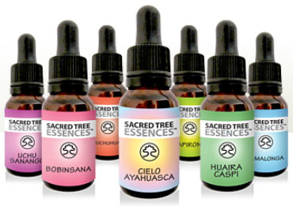
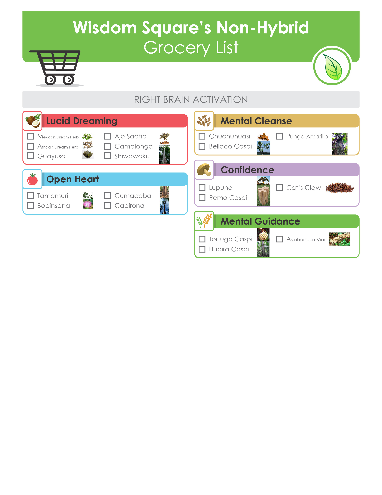

How to Eat to Become the Best Version of Yourself
 What’s going on, I’m David from Wisdom Square and today we’re answering my favorite question: How to eat to become the best version of yourself? Not in a physical sense, but mentally. This is going to be a longer post than normal, so let’s get right into it… Most would agree that we don’t live up to our highest potential. That we don’t master our psychology or take advantage of what the mind is capable of, and yet we know that food affects our thinking and decision-making. What you might not know is that there are three parts to the brain that work independently of each other. They are called the: “Old Brain” (composed of the Reptilian and Limbic sections that have survived from early evolution) The Right and The Left-hemisphere of the Neocortex The old brain is responsible for our survival instincts which all animals possess, while the neocortex has developed in humans. The right hemisphere of the neocortex is responsible for finding patterns and similarities during brainstorming, while relying on intuition and the left hemisphere is responsible for dialectical, analytical thinking for contrasting ideas based on logic and reason. Said another way, the right brain creates new ideas and can design a house, while the left brain filters those ideas so you can actually build it. Most people naturally lean to one side, while neglecting the other. Too much right-brain thinking, and you’ll become exhausted from an overflow of abstract concepts and too much left-brain and you’ll lack meaning and personal-expression in your life. Worst case you become out of touch with reality or live on auto-pilot. But what if you stimulated the other side for it to grow? Imagine if you could have both hemispheres fully developed. You would have the best of both worlds, the creativity and vision of an artist with the analytical skills and structure of a scientist to ground new ideas. You would marry imagination with logic and become a one-person army of potential. You would become Nietzsche’s uber-mench. Despite the task, it is possible. The left hemisphere can improve through actions like repetitious study and writing things down to memorize, while the right hemisphere through meditation and brainstorming. Meditation is what silences our assumptions to allow for new ideas to form. As a side note, have you ever noticed that you get your best ideas in the shower? It’s because we absorb oxygen through our skin, which helps the brain function. This is also why deep breathing during meditation is recommended, since most of us unknowingly breath too shallow throughout the day. Alongside these exercises, certain food can enhance our efforts. For example, have you ever noticed how you feel after consuming un-natural forms of sugar in junk food, especially alcohol which is fermented sugar? Past a certain point, most people experience a loss of patience and more violent thoughts that seem out of character. Many people will also notice this when consuming a certain amount of animal meat… though this is not to say being vegan guarantees sanity. Still, there are obvious benefits to minimizing these foods that noticeably bring us down, as if we were devolving back into cave men. It’s because this type of eating clouds our thinking so the old brain can take over. On the other hand, if we wanted to activate our left hemisphere in charge of rational thought to increase our focus, attention, and memory, then we need nutrients like copper, natural sugar, and natural fat. Copper is one of the best conductors of electricity, which amplifies the electrical signals the brain produces. Copper is found highest in the rainforest fern, known as Kalawalla. This can be found as a tincture from Rain Forest Pharmacy. In fact, very few herbs produce a noticeable effect right away, but this is one of them. Second place would go to mushrooms like Lion’s Mane. You can find this from Host Defense as capsules. I recommend trying them together right before studying or learning something new so you can really notice the difference. Natural sugar is important because it insulates the electrical signals from the brain, concentrating them, as does natural fat which excess sugar turns into. In fact, our mental evolution was partly influenced by climate change and the change in food available. Before there were dense rainforests that blocked the sun from reaching plants low on the ground, so less photosynthesis could occur. Meaning less sunlight could get converted into sugar in the plants within our reach. If you think about it, natural sugar is like eating sunlight. There is a reason after all why sugar is addicting, despite the bad rep it’s gotten from unnatural, processed sources. Real sugar is found in most tropical fruit such as: dates, mangoes, and papaya. Sap from a Coconut Palm and Honey are other important sources, however the flower the bee pollinates and even the type of Honey bee can make drastic differences with its health benefits. Lastly, there’s ancient starches that are slower releasing forms of sugar from grass seeds like: einkorn, fonio, and teff. Healthy fats can be found in: coconuts, avocados, olives, hemp seeds, cacao, and so on. There is one more category I have to mention that influences the left brain. And that’s caffeine! The most popular drug in America, mostly coming from coffee and soda. But if we break those drinks down, we can find something healthy hiding. Coffee’s health concerns come from the milk, processed sugar, and stale hybrid coffee beans. But if you took all that away, you’d be left with green, unroasted Robusta Coffee beans from Ethiopia. Which is where coffee originated from. Technically you could chew on the beans to get the caffeine and spit them out. Or you can roast the beans yourself at home in an oven or on the stove top. Then just add boiling water. Fresh Robusta Coffee made this way not only wakes you up, but also improves your digestion, instead of causing constipation like stale Arabica Coffee does. Yerba Mate leaf tea is another healthy alternative to coffee, so long as it’s the fresh leaf and not pre-roasted which causes it to oxidize and go stale, as is the problem with traditional coffee. Soda is interesting, because originally they were herbal drinks before becoming artificially flavored concoctions. Take for example, Coca Cola. Coca Leaf and Kola Nut. Both plants contain caffeine and are used medicinally in their respective countries, Peru and Jamaica. Another example is Root Beer. Sassafras was used as a stimulant and for its flavor, but the unique foam came from Sarsaparilla Root. This is interesting because the signature foam in Root Beer wouldn’t exist if it wasn’t for the fact that an herb high in iron, when placed in water, will attract oxygen like a magnet and cause bubbles to form around it. This is why iron gives us energy since it’s pulling oxygen into the bloodstream, so much so that you can visibly see it happening with a powerful enough herb. In general, iron is concentrated in the roots of certain plants and should be added to our daily diet if we’re low in energy. Another way to get more oxygen is from a special ancient drink known as Xocolatl in Mexico, today called hot chocolate. This is what Montezuma gave to his soldiers and America gave to theirs during the Revolutionary war to speed recovery-time and keep them alert. It was so effective that Thomas Jefferson actually thought this would one day replace coffee and tea in America. The chocolate or cacao bean is a source of healthy fat and contains theobromine which is similar to caffeine but is more mild and long-lasting. However, the real active ingredient to increase alertness is missing from today’s version of hot chocolate. Which is a hot pepper. In response to the spicy sensation, the body circulates blood faster than usual, which carries more oxygen to the brain making us more alert. This is similar to the mood-boosting effect you get from exercising or even stretching, since that also gets the blood pumping. Now onto the right hemisphere in charge of creativity. There’s one thing that helps creativity more than anything else, and that’s getting out of your own way. In other words, silencing the left brain so the right brain has a chance to speak. Creative thinking and self-expression gets clouded by worry, doubt, fear, shame, guilt, and other limiting beliefs. Mastering this part of your psyche requires you to come face to face with any repressed thoughts, memories or inner demons. What Carl Jung labeled as the shadow-self. Now there are two ways of doing this. Just like with any medicine you can either treat the symptoms or cure the root cause. One provides a temporary relief, while the other permanent change. These plants that can invoke or stimulate the right brain are known as entheogens. The first group, offering a quick relief, lowers your resistance or relaxes you to allow new ideas to come in. This would be great before meditation or brainstorming in appropriate amounts for the right person. It should go without saying however, that too much of anything becomes a bad thing. Now most people will think of Cannabis, but unfortunately it’s not legal everywhere yet.. unlike drugs that actually cause deaths like alcohol or Oxycodone, a “pain relief medicine.” A safe and legal substitute that relaxes in a similar way, without the disorienting high effect, is known as Damiana. Some people will smoke it, although vaping is healthier for the lungs. It’s also common to drink it like tea, or find it in a tincture or capsule form. Another plant is Kratom. This almost became illegal a few years ago in every US state because of its effectiveness against PTSD, chronic pain, and as a means to wean people off opioid addiction, which all poses a threat to “pharmaceutical treatments.” In general, it makes you feel a bit more confident and makes social interactions less stressful for certain people without distorting your judgement as alcohol would. Just search testimonies on YouTube to see what I mean. The one thing you need to know is that there are three main strains based on the stem and vein color: green, white, and red. The most effective and popular one being the Red strain. The other interesting thing is that in low amounts it provides energy and in higher amounts can become a sleep aid for people with insomnia. Now if it’s legal, Cannabis can temporarily help some people breakthrough a mental-block as long as it doesn’t become a crutch. It’s useful in offering a quick sneak peek into a new perspective that you would unlock if you were to permanently solve whatever problem is blocking your path. So it can serve as motivation when starting out. Some people can also microdose cannabis for clearer thoughts, though this may vary based on the person and the type of cannabis used. It can also be applied topically as a cream on the side and rear of the neck or on the bottom of the feet, which may benefit children with autism or ADHD without dulling their personality as Ritalin would. There are two main strains, Sativa (which originates closer to the equator) and Indica (which grows more north, usually at higher altitudes). Sativa is known for its energizing effects and Indica for its pain relieving and relaxing effects. However, the downside of most Cannabis today is that it’s been extensively hybridized over and over to modify the amount of THC to extremes in either direction. This makes it hard to know what you’re actually getting and can have very different effects with different people. The same hybrid strain might help one person sleep, while keep another up all night. One person might become more productive, while another doesn’t want to move. Meanwhile, Industrial or Legal hemp has been modified to get rid of almost all THC, as is the case with sterilized hemp seeds we get in the store or CBD oil. The reality is that it’s impossible to only modify one component of a plant. Once you start messing with its DNA structure, it’s very hard to tell what else is being affected. More research needs to go into this to preserve the benefits of real cannabis. The other thing is that it prevents you from recalling your dreams, which is a great time to learn from your subconscious. More research needs to be done to see whether pure Sativa or pure Indica has the same effect. As an alternative, if you need help with insomnia and still want to dream then look for Valerian root. As a quick side note, despite most people believing there’s no way to get “high” without burning cannabis buds (meaning the unopened flower) either through smoking, vaping, or cooking… there actually is a way to get high without any heat from cannabis leaves that contain on average 10 times less THC than the buds. This is achieved by blending the leaves with coconut and mandarins into a smoothie. Here’s a video of this being discovered accidentally by John Kohler from “Growing Your Greens.” The citric acid and fat source unlock more from the leaves than usual, and I could only wonder what other health properties get unlocked using this method when applied to any plant. The other class of entheogens that can potentially offer a more permanent solution to mental-blocks, without having to consistently consume, works by connecting all parts of the mind so you can confront any repressed situations. Basically, anything that might be holding you back. This typically consists of a visionary journey inwards. Said another way, you get to mentally time travel to past events and change how the past influences you today by rewriting your perspective on it. In short, you get to rewire your brain. Of course, this won’t magically solve your problems since you still need to change your behavior. But you are provided with an opportunity to recognize harmful habits and confront everything in your past head-on so you can come to peace with the steps you need to take in the real world to move forward. That’s the purpose, to heal your psychology. Not to dabble for fun to see if it works. There’s already plenty of “trip reports” on YouTube for that if you’re curious. And not to “dissolve your ego,” since evolution brought us to this point of creating identities, which would be useless if we were meant to devolve back into being unconsciousness. Instead the lesson you learn might be to become less or more selfish depending on you. If you think about it, some of these plants are very “intelligent” to create drastic changes in a person’s life, custom for them. It’s like they have a consciousness which has mastered stillness, or meditation in the sun. But it’s also important to know that this, meaning psychedelics like Ayahuasca or mushrooms, are not necessary for you to fix your problems. They are only useful for certain people, especially when there will always be the risk of a negative experience since these plants mirror your internal state of mind and project it back for you to see as if it was external. That’s why shamans or at least an experienced trip sitter is so important in case you need help during the experience. It’s also not advised for people with a predisposition to schizophrenia since it can trigger it. The biggest problem with using this as a tool comes from not preparing. Aside from tons of research, it’s best to dedicate 30 days to eating clean beforehand. A keto diet wouldn’t be good here. Instead temporarily going vegan, or better yet non-hybrid vegan which I promote with Wisdom Square, would be best. 30 days is what most serious Ayahuasca resorts will recommend, including the one I visited in Peru when I got this t-shirt. During this time we should also include one or a few powerful herbs to assist the body’s natural ability to clean itself. In Peru we were given a strong native cactus drink the day before to purge, which basically meant emptying our stomachs completely. But any powerful cleansing herb would work like Qussia, Blessed Thistle, Anamu, or native to the Amazonian Rainforest: Chuchuhuasi or Bellaco Caspi. These herbs can be taken throughout the 30 day period instead of just the day before. Now, aside from having an empty stomach and being physically clean, you can also work on cleaning negative thought-patterns with Cambodia or Punga Amarillo, which works mostly through dreams. Aside from this, there’s two mental or emotional states you want to be in beforehand. That’s having confidence and an open heart, since fear and bitterness will make for a very unpleasant experience to have mirrored back at you. Specifically for confidence, it might be better to start off with a more gentle visionary psychedelic like the cactus peyote if it’s legal where you live. Or without the visions there’s Lupuna, Remo Caspi, and Cat’s Claw from the Amazon Rainforest. You should also focus on iodine to calm the nerves with seaweed like Bladderwrack. As for an open heart, which can relieve emotional tension that might manifest as physical pain in the body, there’s Tamamuri, Bobinsana, and Cumaceba from the Amazon. This can also be used to battle depression, and if it’s legal then micro-dosing with LSD may also be effective, as was the case with Ayelet Waldman who was contemplating suicide, but survived it to write about her experience in a book titled: “A Really Good Day.” Steve Jobs, along with many other entrepreneurs are also known to have micro-dosed with LSD to help with their creativity. Alternatively, a legal substitute for LSD comes from the Amazon, known as: Capirona. And it should be said that microdosing with mushrooms provides a different experience according to Dr. Strauss, who’s found it to be better for introspection in solitude instead of being productive at work and interacting with others like with microdosed LSD. Another thing you could do during this 30 day period can be using “dream herbs” that help with lucid dreaming. There’s the Dream Herb from Mexico, another Dream Herb from Africa, Guayusa and even stronger: Ajo Sacha, Camalonga, and Shihuahuaco (Shiwawaku) which can improve intuition. These allow you to receive answers from your subconscious, higher self, or the collective subconscious while you sleep. Of course, write down your dream the moment you wake up otherwise you will forget it. Quick note about Shihuahuaco, it's an unprotected endangered species that can take 700 years to fully grow. Since 2001 when Mahogany and Cedar became protected from over-cutting, Shihuahuaco became their substitute to produce hardwood flooring and furniture. Since this tree grows in Peru and the commercial industry has control over politicians, it remains unprotected. Given the current situation, I can still feel good about recommending Sacred Tree Essences because they're using the homeopathy method to make their extracts. Meaning there's only 1% of the plant in each bottle. This "essence" is much more diluted than a tincture, yet still proves effective for most people.  Once you’re ready, you get to pick between the most common psychedelics: Ayahuasca or Mushrooms, again if they’re legal. Ayahuasca is a combination of two herbs: Ayahuasca Vine and Chacruna that contains DMT. Other DMT containing plants may be substituted such as: acasica, rue, or something else. The Ayahuasca Vine doesn’t get substituted, because it’s a unique MAOI or Monoamine oxidase inhibitor, which relaxes you and also enables you to absorb the active ingredient DMT that produces the visions. Extracted DMT powered is the only other way to absorb DMT, but that experience doesn’t last long enough for you to work on your inner-self to get the full benefit. One important thing to know is that you can’t combine an artificially created MAOI, such as a pain relief drug, with the natural MAOI in the vine since it can be deadly. Although usually there will only be two ingredients, others may be added such as Chiric Sanago to increase the chances of having a positive experience. Though it’s not guaranteed you will “blast off” at all if you don’t have something to mentally heal from, which was my case after drinking three shots. As the cliché goes, the plants give you what you need, not what you want. And true power is knowing when not to use it. Though, I did get a sense of how much power was hiding behind this drink. As for Psilocybin mushrooms, they are similar but could benefit from some of the ceremony and preparation that’s usually applied when taking Ayahuasca. There are many different mushrooms that contain psilocybin from all over the world that work when eaten raw, cooked or prepared as a tea. Paul Staments, who is pretty much the authority when it comes to all things mushroom-related, said that he was able to cure his severe stuttering problem after his first trip on psilocybin mushrooms. There is another strong psychedelic worth noting from Africa, that has a reputation of curing people from serious drug addictions that society would otherwise give up on. This is known as Iboga and there are a number of retreat centers built for this. An alcohol addiction might get cured from LSD, which is what happened to Bill Wilson, the co-founder of AA (Alcoholics Anonymous). And one more noteworthy anecdote comes from the creator of PsychedSubstance, Adam, who used the psychedelic Baby Hawaiian Woodrose and accidently broke his addiction to smoking cigarettes. Though the type of psychedelic isn’t really what matters, it’s more so your intention. And breaking an addiction is not something easy at all, which becomes very apparent if you search video testimonials. Now, after the first experience with one of these psychedelics it’s recommended by some Shamans to revisit certain herbs individually while fasting or partially fasting to continue gaining new insights. That’s because you become more receptive and sensitive to them. This practice is known as “dieta” in South America. Unlike in North America, where a diet is meant to restrict oneself to small amounts or special kinds of food in order to lose weight or improve another physical symptom... the purpose of this is to improve spirituality or mentally. The key is not to have any other competing stimulants from food or even social media that can be distracting. Aside from the plants previously mentioned, other non-visionary, yet powerful ones include: Tortuga Caspi, Huaira Caspi, or the Ayahuasca Vine by itself. You might even want to try these herbs instead if you’re nervous about the visionary experience. But it is interesting to know that some people can even gain emotional insight from drinking rosemary tea daily after an initial psychedelic trip. A good time frame for a dieta can be anywhere from 5 days to 30 days. To learn more about each herb you can watch Scott Turner as he shares his experience with each one, as he’s very sensitive to these plants. It should go without saying that your experience can vary drastically as each person is very unique. In conclusion, we covered that the Old brain is stimulated by unnatural sugar, alcohol and meat in excess. The left brain from copper, natural fruit or starch sugar, natural fat, caffeine, and oxygen. The right brain from entheogens that either relax you, purge negative thought-patterns, build up your confidence, open your heart, visually transport you to work on your emotions from past experiences, or without the visions help you gain a new perspective on your life. Here’s a list you can download of the herbs we discussed for both left and right brain thinking for easy reference, as well as some others not mentioned. It’s important to keep in mind that even though entheogens may “break the veil,” you still need to be grounded in rationality to make sense out of it. If you want to go even further into this, then I recommend reading the “Path of Shadow” to get a more complete understanding of what’s really going on during a “trip.” Especially the last section titled the Path of Reason starting on page 143. In fact, try to read it after taking Kalwalla and then read it again after some Capirona and see what new insights you gain.  |